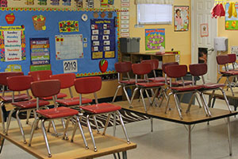

Programs
Infant
Our infant program emphasizes the importance of building trusting relationships. The infant teachers take care of our baby’s needs the same way you do at home. Each infant has their own individual feeding and napping shedule which changes as your child grows and develops. Emotional development is a key ingredient to building trust. The teachers encourage emotional development through playing, singing, reading to, and holding your baby. Communication between the parents and the teachers is also an important aspect of building trust. A daily care sheet with the events of your baby’s day is sent home to foster communication. Additional to emotional development, your baby is exposed to a variety of methods to promote physical development as they grow such as tummy time and practice with standing and walking. (top)
Toddler
This is an exciting time in your child’s development as they are now beginning to walk and become more interested in exploring their environment. Under careful supervision your child will be introduced to a wide range of age-appropriate toys, activities, and learning materials to help them discover their own interests. There is a daily routine which consists of free play, outside play, circle time, and teacher directed activities. A daily care sheet is sent home describing the events of your child’s day. Language development and physical development are also incorporated through reading stories, singing songs, practicing finger plays, arts and crafts, eating independently, and gross motor activities. (top)
Two's
The focus of the two year old room is to nurture your child’s increasing independence. As your child continues to explore their environment they strive to take more control over doing things themselves. In preparation for the three year old program, the two year old teachers encourage the children to begin accomplishing tasks independently such as hanging their coat in their locker, washing their hands, using utensils for eating, and cleaning up their toys. Potty training takes place in the two year old room as it is a big step to helping your child achievPre-Ke independence successfully. Every day your child will be a part of activities that promote their physical, intellectual, social, and emotional development such as free play, outside play, teacher directed play, arts and crafts, singing songs, reading stories, playing games and a structured circle time. We have also added in- house field trips during the winter months for variety in the curriculum. (top)

Three's
The three year old program focuses on responsibility. The “I can do it myself!” attitude is the theme throughout the year. The children learn a wide range of skills related to self-help, cognition, physical development and language. Social development through play and interactions with others are also incorporated into our program. We have a daily routine based on a weekly theme which includes free play, circle time, teacher directed activities, and outside play. Your child will be introduced to numbers, colors, shapes, and the alphabet. They will also learn to recognize and print their own names as well as letters and numbers in preparation for the four year old kindergarten readiness program. To encourage independence, toys and learning materials are readily available for the children to use throughout the day. Your child will be introduced to a wide variety of activities, new concepts, and visitors throughout the year that are both fun and educational. (top)

Pre-K
Our Pre-K only program operates Monday through Friday from 9:30 am until 11:30 am during regular Baltimore County Public School Days. Children arrive between 9:00 am and 9:15 am. Our Pre-K teachers provide the children with the skills necessary to prepare them for Kindergarten under the Creative Curriculum. There is a daily routine based on a weekly theme which consists of circle time, free play, outside play, and teacher directed activities. The children are exposed to a variety of activities, new concepts, and teaching methods throughout the year. (top)
Before & After School Programs
Before and after school programs are available for children attending kindergarten through grade five. Before care begins at 7:00 am where the children can experience a stress-free morning and breakfast before they head off to school. Transportation is provided by the Center to and from six local schools. When children arrive back at the Center they are provided with an afternoon snack and activities to relax after a long day at school. We are committed to creating an environment that is fun with keeping opportunities for learning. Homework help is available if requested by the parent. Afternoon activities include but are not limited to group games, arts and crafts, and outside play. (top)
Summer Camp
Summer camp is an all-day program offered from the end of June through the end of August for children attending first grade through fifth grade. Activities in the program reflect a theme chosen by the Camp Counselors and are provided to encourage exploration and learning of new concepts as well as fun! Our campers attend several off-site field trips that strengthen knowledge of what is being taught in camp and every day skills.
Examples of field trips are Free State Water Park, Free State Fun Zone, Annie’s Playground, Pine Valley Swim Club, Swim Lessons, and Skate Land. Field trips and activities are subject to change from year to year. A non-refundable activity fee is required prior to the beginning of camp aside from the weekly tuition. We also offer an intermediate summer camp for children 4 years old through Kindergarten.
This camp is also an all-day program offered from the end of June through the end of August and follows the same theme as our School Age Summer Camp. There is a non-refundable activity fee prior to the beginning of camp aside from the weekly tuition. Children who have not yet attended Kindergarten are unable to travel to offsite field trips but are exposed to several onsite visitors that are fun and educational! (top)